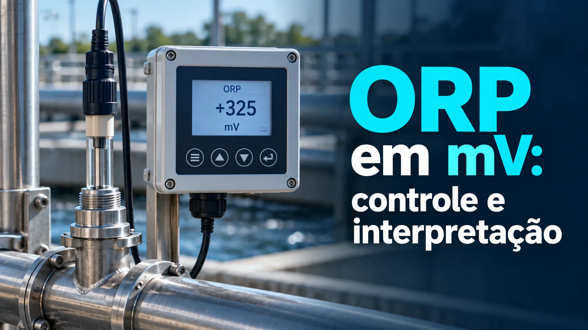

ORP em mV: verificação, diagnóstico e controle industrial
Conteúdo técnico: ALOGY Engenharia · Atualizado em: 11/09/2026

ORP é o potencial elétrico resultante do equilíbrio entre espécies oxidantes e redutoras. A leitura em milivolts descreve esse estado eletroquímico, mas não equivale diretamente a uma concentração específica.
O que a leitura realmente informa
A relação com cloro, sulfito ou outro reagente depende de pH, temperatura, composição, mistura, tempo de contato e química do processo. Converter mV para uma porcentagem genérica serve apenas como visualização de faixa, não como análise química.
Como o sensor produz o sinal em mV
O sensor compara o potencial de um eletrodo metálico, normalmente platina ou ouro, com o potencial estável de um eletrodo de referência. O transmissor mede essa diferença com alta impedância.
Sujeira no metal, obstrução da junção, alteração do eletrólito de referência, umidade em conectores ou caminho elétrico indevido podem deslocar ou tornar instável a leitura, mesmo sem mudança real no processo.
Verificação com solução de referência
- Registre leitura, temperatura e diagnósticos as-found.
- Limpe o elemento metálico e a junção conforme o manual.
- Use solução ORP de valor conhecido, dentro da validade e sem contaminação.
- Aguarde estabilidade e compare com o valor de referência aplicável à temperatura.
- Registre a condição as-left e qualquer intervenção.
Exemplo: para uma solução indicada como 220 mV, uma leitura estabilizada de 212 mV apresenta desvio de −8 mV. A aceitação deve vir do fabricante e do procedimento da instalação, não de um limite genérico.
Separe sensor, transmissor e processo
- Sensor: estabiliza no valor esperado da solução de referência?
- Transmissor: entrada, cabos, aterramento e indicação respondem corretamente?
- Processo: a instalação detecta uma mudança real depois do tempo de transporte, mistura e resposta do sensor?
Se o sensor passa na referência, mas o valor instalado continua incoerente, investigue amostragem, localização, fluxo, aterramento, interferência e a própria química do processo.
Quando a leitura parece errada
- incrustação ou passivação do elemento de platina/ouro;
- junção de referência obstruída ou eletrólito comprometido;
- bolhas, vazão inadequada, amostra não representativa ou mistura insuficiente;
- cabos, conectores, aterramento ou entrada do transmissor com problemas;
- comparação com laboratório sem considerar tempo, local e condição da amostra.
ORP em controle de dosagem
O setpoint de ORP precisa ser estabelecido a partir do objetivo do processo e de dados validados. Antes de fechar a malha, confirme sentido de ação, atraso de transporte, capacidade da bomba, limites de dosagem, mistura e intertravamentos.
Em uma condição estável, por exemplo, uma etapa de dosagem que eleva a tendência de 360 para 430 mV após quatro minutos fornece três informações úteis: ΔORP = +70 mV, sentido da resposta e tempo observado. Isso sozinho não informa concentração nem comprova que 430 mV seja o setpoint adequado.
Em malha fechada, atraso elevado e ganho agressivo podem provocar oscilações entre excesso e falta de reagente. Banda morta, limites de saída e alarmes devem ser definidos com base em ensaio controlado e risco do processo.
Diagnóstico por comportamento
- Resposta lenta: passivação, renovação da amostra, mistura ou tempo de transporte.
- Leitura ruidosa: aterramento, umidade, conectores, blindagem, vazão irregular ou bolhas.
- Valor quase fixo: contato com a amostra, referência ou filtragem/damping excessivo.
- Referência correta e processo divergente: representatividade da amostra, pH, temperatura, interferentes e ponto de instalação.
Ferramentas e referências
- Calibração de analisadores de processo
- Tempo de amostragem em analisadores
- Yokogawa — sensores pH/ORP PH4/OR4
- Endress+Hauser — ORP sensors and transmitters
Aviso de uso
Não use ORP isoladamente para definir concentração, dosagem, segurança, qualidade ou setpoint. Considere análise do processo, procedimento, intertravamentos, documentação do fabricante e validação técnica.